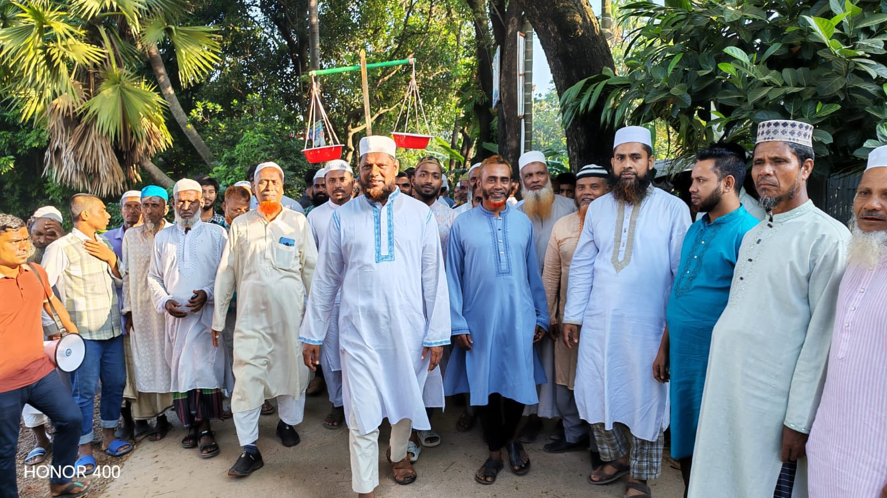

স্টাফ রিপোর্টার

দীর্ঘদিন ধরে অত্যাচারিত ও নিপীড়িত পলাশের জনগণ আজ পরিবর্তনের আকাঙ্ক্ষায় ঐক্যবদ্ধ। বঞ্চনা, অবিচার ও দমন-পীড়নের বিরুদ্ধে তারা আর নীরব থাকতে চায় না। ন্যায়, মর্যাদা ও মানুষের অধিকার প্রতিষ্ঠার দাবিতে এই জনতার কণ্ঠস্বর এখন স্পষ্ট ও দৃঢ়। পলাশের মানুষ বিশ্বাস করে—এই পরিবর্তন শুধু সময়ের দাবি নয়, বরং একটি নতুন ভবিষ্যতের সূচনা।
দীর্ঘদিন ধরে অত্যাচারিত ও নিপীড়িত পলাশের জনগণ আজ পরিবর্তন চায়—এই সত্য এখন আর অস্বীকার করার কোনো সুযোগ নেই। বছরের পর বছর ধরে তারা অবহেলা, বঞ্চনা ও শোষণের শিকার হয়ে এসেছে। মৌলিক অধিকার থেকে শুরু করে ন্যায়বিচার পর্যন্ত, প্রতিটি ক্ষেত্রে পলাশের সাধারণ মানুষ নিজেদের পিছিয়ে পড়া অবস্থান প্রত্যক্ষ করেছে। এই দীর্ঘ সময়ের দুঃসহ অভিজ্ঞতা তাদের মনে গভীর ক্ষত তৈরি করেছে, যা শুধু কথায় নয়, বাস্তব পরিবর্তনের মাধ্যমেই নিরাময় সম্ভব।
পলাশের জনগণ বহুবার আশ্বাস পেয়েছে, কিন্তু বাস্তবে তার প্রতিফলন খুব কমই দেখা গেছে। উন্নয়নের নামে কিছু দৃশ্যমান অবকাঠামো গড়ে উঠলেও সাধারণ মানুষের জীবনমানের প্রকৃত পরিবর্তন হয়নি। কর্মসংস্থান, শিক্ষা, স্বাস্থ্যসেবা ও সামাজিক নিরাপত্তার মতো গুরুত্বপূর্ণ খাতে তারা বরাবরই বৈষম্যের শিকার হয়েছে। এই দীর্ঘদিনের অবহেলা জনগণের মধ্যে হতাশা তৈরি করলেও তা আজ রূপ নিয়েছে দৃঢ় প্রত্যয়ে—আর নয় নীরবতা, এবার পরিবর্তনের পথে এগিয়ে যাওয়ার সময়।
এই পরিবর্তনের আকাঙ্ক্ষা কোনো হঠাৎ আবেগের ফল নয়; বরং এটি গড়ে উঠেছে দীর্ঘ সংগ্রাম, ত্যাগ ও সচেতনতার মাধ্যমে। পলাশের মানুষ আজ বুঝতে পেরেছে যে, নিজেদের অধিকার আদায়ে ঐক্যই সবচেয়ে বড় শক্তি। তারা ন্যায়ভিত্তিক সমাজ ব্যবস্থা, স্বচ্ছ প্রশাসন এবং জবাবদিহিমূলক নেতৃত্ব চায়। যেখানে ক্ষমতা হবে মানুষের সেবার জন্য, শোষণের হাতিয়ার নয়। জনগণ এমন একটি ভবিষ্যৎ কল্পনা করছে, যেখানে প্রতিটি নাগরিক মর্যাদার সঙ্গে বাঁচার সুযোগ পাবে।
আজ পলাশের জনগণের কণ্ঠস্বর আগের যেকোনো সময়ের চেয়ে বেশি শক্তিশালী ও সুসংগঠিত। ভয়, অনিশ্চয়তা ও দমন-পীড়নের দেয়াল ভেঙে তারা সামনে এগিয়ে আসছে সাহসের সঙ্গে। এই পরিবর্তনের দাবি শুধু একটি অঞ্চলের নয়, এটি একটি ন্যায়ভিত্তিক সমাজ গঠনের প্রতীক। পলাশের মানুষ বিশ্বাস করে—পরিবর্তন আসবেই, কারণ ইতিহাস সাক্ষ্য দেয়, যখন নিপীড়িত জনগণ একত্রিত হয়, তখন কোনো শক্তিই তাদের ন্যায্য অধিকার থেকে বঞ্চিত করে রাখতে পারে না।
এই পরিবর্তনের যাত্রা সহজ হবে না, পথে বাধা আসবে, কিন্তু জনগণের দৃঢ় সংকল্পই হবে সবচেয়ে বড় চালিকা শক্তি। পলাশের মানুষ আজ আর অপেক্ষা করতে চায় না; তারা চায় এখনই কার্যকর পদক্ষেপ, বাস্তব সমাধান এবং একটি সুন্দর, মানবিক ভবিষ্যৎ। এই প্রত্যাশাই তাদের এগিয়ে নিয়ে যাচ্ছে নতুন দিনের স্বপ্নের দিকে।